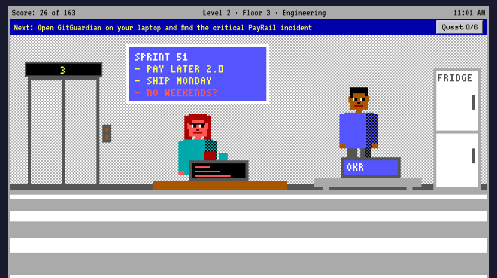
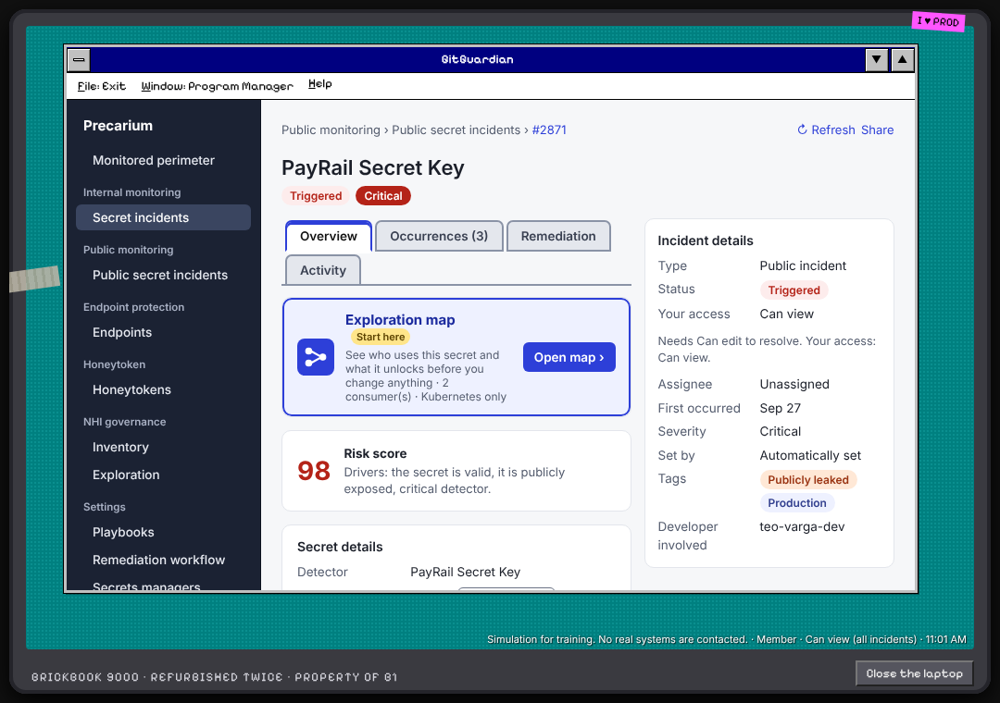
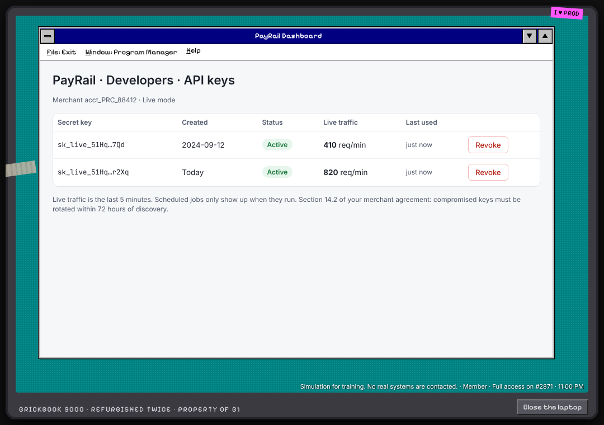

Level 1 · Floors B1 and 2
Restricted
You can see one incident. Get the help desk to rotate a leaked token, close a real leak, and show the IT Director why her renewal and her SOC 2 audit need you.
A GitGuardian adventure
It's your first day as the only security person at Precarium Inc. GitGuardian has flagged a live payment key in a public gist for 41 days, and every alert went to someone who left. You can't even open the incident yet.
▶ Click here to playFree. Runs in your browser. About 30 to 45 minutes. The blue bar always tells you what to do next.

Finding a leaked secret is the easy part. Getting the access, the change window and the signatures to fix it without taking production down is the hard part. That part is mostly people.
This game is about that part. You start with almost no access: a badge for two floors and a Restricted GitGuardian account. Each floor of the building has someone who can give you more, and each of them cares about a number. GitGuardian is how you get the evidence that moves their number.
It's the easier sibling of Lossy Inc: one long quest instead of a week, with the same look, the same verbs and the same simulated GitGuardian.
Everything is simulated. The game is one web page. It contacts no real system, and the company, its people and its vendors are made up.


Pick a verb, then click something in the room. Or type it: look laptop, talk otto, press 3.
You can see one incident. Get the help desk to rotate a leaked token, close a real leak, and show the IT Director why her renewal and her SOC 2 audit need you.
You can see all 2,417 incidents and touch none of them. Fix a noisy pre-commit hook and win over the engineering manager who only cares about velocity.
SRE has been burned by rotations before. Find every consumer of the key, including the one in no repo, and write a runbook with a rollback.
The freeze belongs to Finance. Trade PCI DSS evidence for a contract clause, then talk money to the CFO.
The CTO doesn't believe anyone reads an old gist. A honeytoken in a public repo changes his mind in four minutes.
Rotate a live payment key while checkout keeps taking money. New key first, every consumer moved, old key revoked only when it's truly quiet.
PROD IS DOWN · 2:00 AM
At 11:40 PM everything was green, so you went home. At 2:00 AM the nightly reconciliation job sent the old key to PayRail and got a 401. Finance has no numbers for quarter close.
Batch jobs don't show up in live traffic. GitGuardian's exploration map listed recon-batch as a consumer. Move it before you revoke.
Open the Menu and pick Save code to get a code like DBP-1A2B-3C4D. Type it in on the title screen to pick up where you left off, on any device. It holds your level, the time and everything you've done on that level.
Facilitators can jump straight to a level with a perfect start: DBP-PERF-L1 to DBP-PERF-L6. DBP-PERF-L6 drops you into the change window.
Every trap in the game happened to someone: support tokens left unrotated after a leak, rotations that forgot a mail relay or a cache, a storage outage caused by deleting a credential before the new one was live, and a key that sat on public GitHub for five years. The bosses' arguments come from GitGuardian customer stories and the State of Secrets Sprawl report.